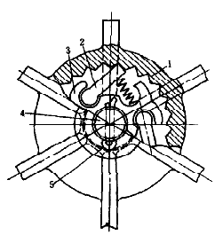
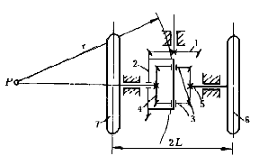
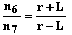
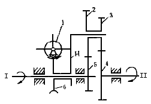
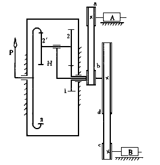
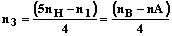
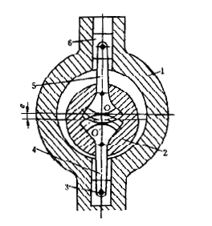

| 差动棘轮和差动齿轮机构 |
机构示意图 |
机构特性简介 |
|
 |
割草机轮轴4的两端各设有行走轮1，在转弯时，要求左右轮转速不等，棘轮式差动机构可满足此要求。内棘轮1是行走轮，它空套在轮4上，六槽圆盘3用销5与轮轴固联，并装有棘爪2与内棘轮1啮合。当行走轮逆时针转动时，带动轮轴转动；当行走轮顺时针转动时，轮1在棘爪上滑动，达到差动要求。该机构用于以行走轮为主动的蓄力割草机中。
|
|
 |
主动锥齿轮1通过从动齿轮2及2上的系杆带动行星轮3，驱使左右半轴齿轮4、5来带动左右驱动车轮7、6。 汽车转弯时，为了保持左右驱动车轮在地面上作纯滚动，要求两轮转速

式中n6、n7--左右车轮的转速，且n7=n4,n6=n5；
r--汽车后轴中心的转弯半径；
L--汽车后轮距的一半。
N6=n2（r＋L）／r
N7=n2（r－L）／r
汽车在直线行驶时，n2=n6=n7，此时由齿轮3、4、 5和2组成的差动轮系不起作用。当车轮6陷入泥泞中，轮7在干硬路面上时，两轮的道路阻力相差甚大时，相当轮7被制动，即n7=0。轮6近似没有阻力， 则n6=2*n2。 |
|
 |
蜗杆1不转动时，齿轮5-2-3-4为定轴轮系。主动轴1通过定轴轮系带动从动轴II转动。如要调整I、II两轴间的相位角时，可转动蜗杆1带动蜗轮6和与6固联的转臂H，使齿轮2、3、4带动轴II转动一定角度，结果改变I、II轴间的相位角。这种机构可在工作过程中调整相位角。
|
|
 |
由构件l－2－2'－3－H组成的差动轮系将两个涡轮机A、B的转动合成一个运动，用以测定两涡轮机的转速差。涡轮机A通过传动带驱动齿轮1，涡轮机B通过传动带驱动系杆H作同向转动。齿轮3的转速为前二者的转速差。若带轮直径民Da=Db=Dc=100mm、 Dd=500mm，各轮齿数分别为：z1=18、z2=24、z2'=21、z3=63， 则齿轮3的转速

轮3固联指针P，当两涡轮机A，B转速相等（同步)时，n3=O，齿轮3上的指针P不动，而且指在 "0"点；当nB＞nA时，n3＞0，为"＋"，则指针与涡轮机转向相同；当nB＜nA时，n3＜0为"-"，则指针与涡轮转向相反。以此为依据来调整给汽量，实现两涡 轮机同步运转。 |
|
 |
非共线两轴之间的联接除可采用各式联轴器外，还可采用位置偏差补偿机构。在图中，主动轴1的轴心为O，从动轴 2的轴心为O'，两轴线的偏差为OO'=e。主、从动轴与连杆4、5及滑块3、6组成差动机构，并用扇形齿轮啮合封闭。在工作过程中，当轴心O与O'的相对位置 发生变化时，借助此机构可自动得到补偿，而不影响两轴的运动传递。
|